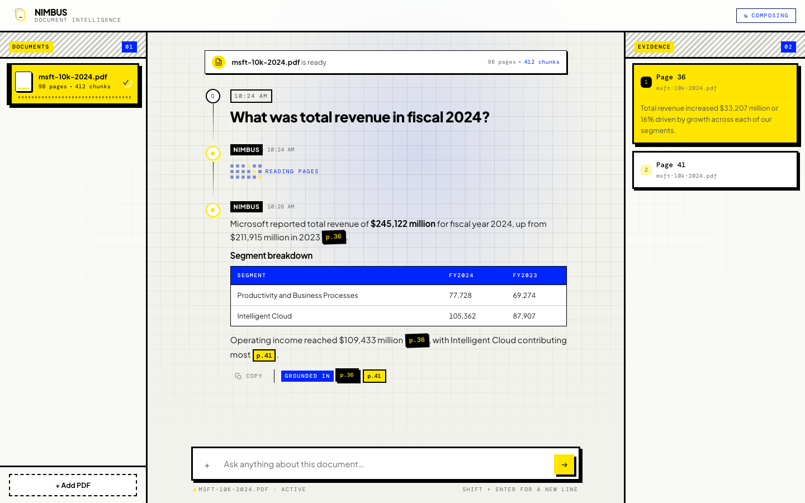

Nimbus
Upload a PDF. Ask a question. Get an answer with the page number attached
Team No. 5 · Sujay · Mahesh · Yamini · Siva Prasad
The answer is in the document.
Finding it is the work.
People lose hours hunting through PDFs — HR policies, product manuals, audit reports, insurance documents, annual reports. The information is right there. Getting to it is the job.
Documents are long
An annual report runs to eighty pages. The one sentence you need is on page 36, inside a table, and you do not know that yet.
Search finds words, not answers
Ctrl+F matches the letters you typed. It cannot read a table, follow a heading, or tell you which of forty matches is the one that answers your question.
A confident guess is worse than nothing
A chatbot that invents a plausible number is more dangerous than one that finds nothing, because you cannot tell the difference.
Nimbus: upload the PDF, ask in plain English, and get an answer with the page it came from — or an honest “that is not in this document”.
What we built
Upload a PDF at runtime, then parse, chunk, embed and store it in a vector index.
Retrieve the top matching chunks, answer strictly from them, and cite page numbers inline.
Refuse instead of guessing when the evidence does not support an answer.
A chunking lab comparing 256, 512 and 1024 tokens on the same set of questions.
A source panel showing the exact retrieved text behind every answer.
Three things the brief did not ask for
A second ranking pass. A reranker re-reads the top candidates and its opinion is combined with the search result, rather than trusting either alone.
Citations are verified, not trusted. Every page number the model writes is checked against the pages it was actually shown. If one fails, the answer is thrown away.
A larger test set. The brief asks for 20 questions; we scored 24 — 18 the document can answer and 6 it cannot, to test refusal properly.
All of it runs on a PDF uploaded at runtime. Nothing is pre-indexed, and the answer is never written before the evidence is found.
How a question becomes a cited answer
Technology stack, layer by layer
| Layer | Current implementation | Role |
|---|---|---|
| Frontend | React · TypeScript · Motion · Browser File API · Fetch / SSE | Upload, query, stream |
| Backend | Node.js · Express · REST APIs · SSE proxying · CORS · request validation | Orchestration |
| AI / document intelligence | Python · FastAPI · PyMuPDF · sentence-transformers · all-MiniLM-L6-v2 · FAISS · CrossEncoder · Anthropic Claude | Parse, retrieve, answer |
| Evaluation | Python scripts · 24-case gold set · answer metrics · retrieval metrics · citation metrics · refusal evaluation | Measure quality |
The stack is deliberately explicit: no unimplemented framework or vector database is implied.
Four layers, three processes, one vector index — all of it running locally, and reproducible from the repository.
How big should a chunk be?
Same document, same questions, same pipeline. Each setting was given the same total amount of retrieved text, so nothing wins just by being handed more. The bar is how often the page holding the answer came back.
They tied, so we chose on cost
256 and 512 reach the same 87%. We shipped 512 because it gets there with 127 chunks instead of 230, and sends the model 5 chunks instead of 9 — half the index, and a shorter prompt with less distracting text.
Both extremes lose
At 1024 one useful sentence sits in a page of unrelated text, and that text drags the match away from the question. And more overlap is not better — at 20% the chunks repeat so much that they crowd out distinct pages.
Every claim carries its page

A — “The information cannot be determined from the document. The provided evidence only contains revenue data for fiscal years 2023, 2024, and 2025.”
Definition of done, and whether we met it
Every answer cites a page number. Enforced in code — an answer whose citations do not check out is replaced by a refusal before anyone sees it.
Out-of-scope questions are refused, not invented. Six questions the document cannot answer; six correct refusals. Four of them were deliberately plausible.
A gold set scored for faithfulness. 24 questions with verified answers, re-scoreable at any time by running one command.
Best chunking config reported with evidence. 512 tokens with 50 overlap. It tied with 256 on quality, so we chose the one that indexes half as many chunks.
What went wrong, and what we did about it
| What went wrong | What we did |
|---|---|
| The right page was often missed | Stopped trusting one ranking method. We search by meaning, re-rank with a second model, and combine both opinions — which beats either one alone. |
| Financial pages ranked too low | Taught the ranker to notice metrics, years and statement terms, so a table of figures is not outranked by prose about figures. |
| One page crowded out all the others | Capped how many chunks a single page can contribute, so the evidence spans the document instead of clustering. |
| The model could cite a page it was never shown | Every page number in the answer is checked against the pages actually retrieved. If one does not match, the whole answer is discarded and a refusal is returned. |
| Naming the company broke the search | In a document about one company, its name is on every page — so it tells the search nothing while dominating the question. We remove it before searching. |
| You could not tell which PDF was active | A document shelf showing every upload, with exactly one active per question. |
Nimbus makes the evidence path visible — from the uploaded page to the validated answer.
Future enhancements
Planned, not built. Listed so the line between the two stays clear.
Multi-document workspaces
Keep several documents active at once and ask questions that span them — comparing two years of a report, or a policy against its amendment.
Table- and layout-aware retrieval
Financial tables, multi-column layouts and charts still get flattened into plain text. We measured the reranker putting a revenue table sixth behind five pages of prose about revenue — tables need their own handling.
Structure-aware chunking
Chunks are cut by token count, so a table row and a paragraph are treated identically. Cutting on the document's real structure — headings, sections, table rows — is the next thing worth measuring.
Lifecycle and security
Versioning, deletion, incremental re-indexing, authentication, session isolation and audit logging — everything needed before a real document goes near it.